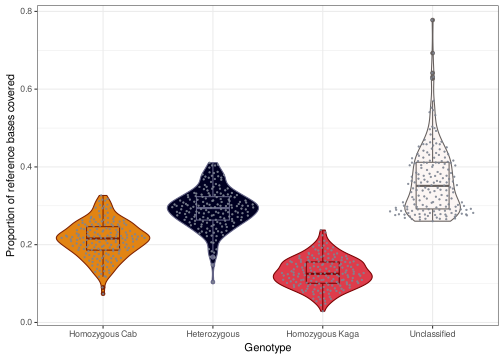
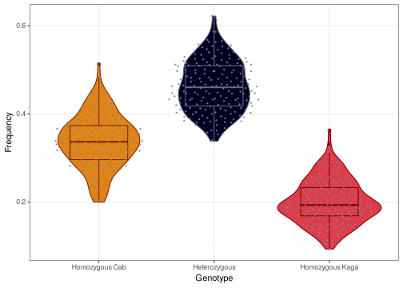
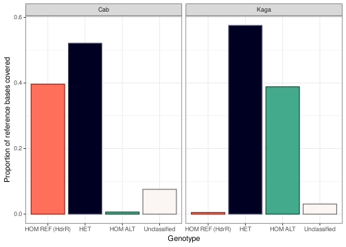

Somite period F2 analysis
Ian Brettell
2021-08-03
1 Preliminary
library(here)
source(here::here("docs/source.R"))1.1 Read in data
in_dir = "/nfs/research/birney/users/ian/somites/recombination_blocks"
in_files = list.files(in_dir, pattern = "20210716_hmm_output_batch_01", full.names = T)
# Read into list
data_list = purrr::map(in_files, function(FILE){
out = readr::read_tsv(FILE,
col_types = "ciiidii")
})
# Set names as bin length
names(data_list) = basename(in_files) %>%
stringr::str_split("_", simplify = T) %>%
subset(select = 7) %>%
stringr::str_remove(".txt")
# Reorder
data_list = data_list[order(as.numeric(names(data_list)))]
counter = 0
df_list = purrr::map(data_list, function(data){
counter <<- counter + 1
# set bin length
bin_length = as.numeric(names(data_list)[counter])
# add bin start and end coordinates
df = data %>%
dplyr::mutate(LANE = basename(sample) %>%
stringr::str_remove(".txt") %>%
as.numeric(.),
BIN_LENGTH = bin_length,
BIN_START = bin * bin_length + 1,
BIN_END = bin * bin_length + bin_length,
BIN_LENGTH_KB = BIN_LENGTH / 1e3,
READS_PER_BIN = mat + pat)
return(df)
})1.2 Look at relationship between ratio and state
To determine which state is associated with which parental strain.
In the pipeline, we set Cab as F0_1 and Kaga as F0_2.
head(df_list$`5000`)## # A tibble: 6 x 13
## sample mat pat bin ratio chr state LANE BIN_LENGTH BIN_START BIN_END BIN_LENGTH_KB
## <chr> <int> <int> <int> <dbl> <int> <int> <dbl> <dbl> <dbl> <dbl> <dbl>
## 1 /hps/nobackup/birn… 0 3 4 0 1 1 1 5000 20001 25000 5
## 2 /hps/nobackup/birn… 5 1 6 0.833 1 1 1 5000 30001 35000 5
## 3 /hps/nobackup/birn… 4 2 8 0.667 1 1 1 5000 40001 45000 5
## 4 /hps/nobackup/birn… 13 9 11 0.591 1 1 1 5000 55001 60000 5
## 5 /hps/nobackup/birn… 16 30 16 0.348 1 1 1 5000 80001 85000 5
## 6 /hps/nobackup/birn… 5 3 17 0.625 1 1 1 5000 85001 90000 5
## # … with 1 more variable: READS_PER_BIN <int>ratio = mat / (mat + pat), where mat = Cab and pat = Kaga.
Plot ratio against state
df_list$`5000` %>%
dplyr::mutate(state = factor(state, levels = 0:2)) %>%
ggplot() +
geom_boxplot(aes(state, ratio)) +
guides(colour = "none") +
theme_bw()
# Save
ggsave(here::here("docs/plots/20210716_ratio_v_state.png"),
device = "png",
width = 8,
height = 5,
units = "in",
dpi = 400)knitr::include_graphics(here::here("docs/plots/20210716_ratio_v_state.png"))
This shows that state 0 is associated with a low ratio of Cab to Kaga, and therefore a call of Kaga. Vice versa for state 2 and Cab.
1.3 Recode state to put in correct order
df_list = purrr::map(df_list, function(df){
df = df %>%
dplyr::mutate(state = dplyr::recode(state,
`0` = 2,
`1` = 1,
`2` = 0))
})2 Read counts per bin
# How many bins in each data frame?
purrr::map_int(df_list, nrow)## 5000 10000 15000 20000
## 17128763 10212633 7358317 5772293# Plot
df_list %>%
dplyr::bind_rows() %>%
dplyr::slice_sample(n = 1e5) %>%
dplyr::mutate(BIN_LENGTH_KB = factor(BIN_LENGTH_KB, levels = unique(BIN_LENGTH_KB)[order(unique(BIN_LENGTH_KB))])) %>%
# Plot
ggplot(aes(BIN_LENGTH_KB, log10(READS_PER_BIN), fill = BIN_LENGTH_KB)) +
geom_boxplot() +
theme_bw() +
scale_fill_manual(values = c("#778DA9", "#415A77", "#1B263B", "#0D1B2A")) +
guides(fill = "none")## Warning: Removed 73 rows containing non-finite values (stat_boxplot).
2.1 Read counts by proportion of Kaga
df_list %>%
dplyr::bind_rows() %>%
dplyr::slice_sample(n = 1e5) %>%
dplyr::mutate(PROP_KAGA = pat / READS_PER_BIN ) %>%
# Plot
ggplot(aes(READS_PER_BIN, PROP_KAGA)) +
geom_point(alpha = 0.2) +
theme_bw() +
facet_grid(cols = vars(BIN_LENGTH)) +
# scale_colour_manual(values = c("#778DA9", "#415A77", "#1B263B", "#0D1B2A")) +
guides(fill = "none")## Warning: Removed 55 rows containing missing values (geom_point).
# Limit to bins with 0-100 reads
df_list %>%
dplyr::bind_rows() %>%
dplyr::slice_sample(n = 1e5) %>%
dplyr::mutate(PROP_KAGA = pat / READS_PER_BIN ) %>%
# Plot
ggplot(aes(READS_PER_BIN, PROP_KAGA)) +
geom_point(alpha = 0.2) +
theme_bw() +
facet_grid(cols = vars(BIN_LENGTH)) +
# scale_colour_manual(values = c("#778DA9", "#415A77", "#1B263B", "#0D1B2A")) +
guides(fill = "none") +
xlim(0,100)## Warning: Removed 22515 rows containing missing values (geom_point).
3 Proportion of genome and sites called as a given state
3.1 Proportion of genome covered by each state
3.1.1 Read in total medaka genome count
# Get chromosome lengths
med_chr_lens = read.table(here::here("data",
"Oryzias_latipes.ASM223467v1.dna.toplevel.fa_chr_counts.txt"),
col.names = c("chr", "end"))
# Add start
med_chr_lens$start = 1
# Reorder
med_chr_lens = med_chr_lens %>%
dplyr::select(chr, start, end) %>%
# remove MT
dplyr::filter(chr != "MT")
# Total HdrR sequence length
total_hdrr_bases = sum(med_chr_lens$end)3.1.2 Get total number of bases covered by each state
# Take 5kb DF
df = df_list$`5000`
# Set states to loop over
states = 0:2
names(states) = states
# Run loop over each LANE
base_cov_df = df %>%
split(., f = .$LANE) %>%
purrr::map(., function(LANE){
# convert to ranges object
lane_ranges = GenomicRanges::makeGRangesFromDataFrame(LANE,
keep.extra.columns = T,
ignore.strand = T,
seqnames.field = "chr",
start.field = "BIN_START",
end.field = "BIN_END")
# get total bases covered by each state
purrr::map_dfr(states, function(STATE){
lane_ranges[lane_ranges$state == STATE] %>%
# merge contiguous ranges
GenomicRanges::reduce(.) %>%
# get width of ranges
width(.) %>%
# get total bases covered
sum(.) %>%
# coerce into data frame
data.frame("BASES_COVERED" = .)
}, .id = "STATE") %>%
# add FREQ column
dplyr::mutate(FREQ = BASES_COVERED / total_hdrr_bases) %>%
# add UNCLASSIFIED row
tibble::add_row(STATE = "UNCLASSIFIED",
BASES_COVERED = total_hdrr_bases - sum(.$BASES_COVERED),
FREQ = (total_hdrr_bases - sum(.$BASES_COVERED)) / total_hdrr_bases)
}
) %>%
dplyr::bind_rows(.id = "LANE")Plot
# Plot
base_cov_df %>%
dplyr::mutate(STATE = factor(STATE, levels = c(0,1,2, "UNCLASSIFIED")),
STATE_RECODE = dplyr::recode(STATE,
`0` = "Homozygous Cab",
`1` = "Heterozygous",
`2` = "Homozygous Kaga",
"UNCLASSIFIED" = "Unclassified")) %>%
# plot
ggplot(aes(STATE_RECODE, FREQ, colour = STATE, fill = STATE)) +
geom_violin() +
geom_boxplot(width = .3) +
ggbeeswarm::geom_quasirandom(color="#7D8491", size=0.4, alpha=0.9) +
theme_bw() +
scale_colour_manual(values = pal_hom_het_2_lines) +
scale_fill_manual(values = pal_hom_het_2) +
guides(colour = "none", fill = "none") +
xlab("Genotype") +
ylab("Proportion of reference bases covered")
3.1.2.1 By chromosome
Process.
# Set states to loop over
states = 0:2
names(states) = states
# Run loop over each LANE
base_cov_df_chr = df %>%
split(., f = .$LANE) %>%
purrr::map(., function(LANE){
# convert to ranges object
lane_ranges = GenomicRanges::makeGRangesFromDataFrame(LANE,
keep.extra.columns = T,
ignore.strand = T,
seqnames.field = "chr",
start.field = "BIN_START",
end.field = "BIN_END")
# loop over each chromosome
purrr::map(med_chr_lens$chr, function(CHR){
# get total length of target chromosome
target_chr_len = med_chr_lens$end[med_chr_lens$chr == CHR]
# get total bases covered by each state per chromosome
purrr::map_dfr(states, function(STATE){
lane_ranges[lane_ranges$state == STATE & lane_ranges@seqnames == CHR] %>%
# merge contiguous ranges
GenomicRanges::reduce(.) %>%
# get width of ranges
width(.) %>%
# get total bases covered
sum(.) %>%
# coerce into data frame
data.frame("BASES_COVERED" = .)
}, .id = "STATE") %>%
# add FREQ column
dplyr::mutate(FREQ = BASES_COVERED / target_chr_len ) %>%
# add UNCLASSIFIED row
tibble::add_row(STATE = "UNCLASSIFIED",
BASES_COVERED = target_chr_len - sum(.$BASES_COVERED),
FREQ = (target_chr_len - sum(.$BASES_COVERED)) / target_chr_len)
}) %>%
dplyr::bind_rows(.id = "CHR")
}
) %>%
dplyr::bind_rows(.id = "LANE")saveRDS(base_cov_df_chr, here::here("data/20210716_base_cov_per_chr.rds"))Plot
# Plot
base_cov_df_chr %>%
dplyr::mutate(STATE = factor(STATE, levels = c(0,1,2, "UNCLASSIFIED")),
STATE_RECODE = dplyr::recode(STATE,
`0` = "Homozygous Cab",
`1` = "Heterozygous",
`2` = "Homozygous Kaga",
"UNCLASSIFIED" = "Unclassified"),
CHR = factor(CHR, levels = med_chr_lens$chr)) %>%
# plot
ggplot(aes(STATE_RECODE, FREQ, colour = STATE, fill = STATE)) +
geom_violin() +
geom_boxplot(width = .1) +
ggbeeswarm::geom_quasirandom(color="#7D8491", size=0.1, alpha=0.7) +
theme_bw() +
scale_colour_manual(values = pal_hom_het_2_lines) +
scale_fill_manual(values = pal_hom_het_2) +
guides(colour = "none", fill = "none") +
xlab("Genotype") +
ylab("Proportion of reference bases covered") +
facet_wrap(~CHR, nrow = 4, ncol = 6) +
theme(axis.text.x = element_text(angle = 45, hjust = 1))
3.1.3 Proportion of sites covered by each state
3.1.3.1 Genome-wide
df %>%
# get counts of sites per LANE and state
dplyr::group_by(LANE, state) %>%
dplyr::count() %>%
# spread to one row per LANE
tidyr::pivot_wider(id_cols = LANE, names_from = state, values_from = n) %>%
# calculate frequencies of states per LANE
dplyr::mutate(TOTAL = sum(`0`, `1`, `2`),
FREQ_0 = `0` / TOTAL,
FREQ_1 = `1` / TOTAL,
FREQ_2 = `2` / TOTAL) %>%
# gather
tidyr::pivot_longer(cols = starts_with("FREQ_"),
names_to = "STATE",
names_prefix = "FREQ_",
values_to = "FREQ") %>%
# order STATE and recode with meaning
dplyr::mutate(STATE = factor(STATE, levels = c(0,1,2)),
STATE_RECODE = dplyr::recode(STATE,
`0` = "Homozygous Cab",
`1` = "Heterozygous",
`2` = "Homozygous Kaga")) %>%
# plot
ggplot(aes(STATE_RECODE, FREQ, colour = STATE, fill = STATE)) +
geom_violin() +
geom_boxplot(width = .5) +
ggbeeswarm::geom_quasirandom(color="#7D8491", size=0.4, alpha=0.9) +
theme_bw() +
scale_colour_manual(values = pal_hom_het_2_lines) +
scale_fill_manual(values = pal_hom_het_2) +
guides(colour = "none", fill = "none") +
xlab("Genotype") +
ylab("Frequency")

Frequency based on number of sites
ggsave(here::here("plots/20210716_gt_freqs_sites.png"),
device = "png",
width = 10,
height = 5.8,
units = "in",
dpi = 400)3.1.3.2 Per chromosome
df %>%
dplyr::mutate(state = factor(state, levels = 0:2)) %>%
# get counts of sites per LANE and state
dplyr::group_by(LANE, chr, state) %>%
dplyr::count(.drop = F) %>%
# spread to one row per LANE
tidyr::pivot_wider(id_cols = c(LANE, chr), names_from = state, values_from = n) %>%
# replace NAs with 0 manually , because `.drop = F` in `count` above doesn't work
dplyr::mutate(dplyr::across(c(`0`, `1`, `2`),
~tidyr::replace_na(.x, 0))) %>%
# calculate frequencies of states per LANE
dplyr::mutate(TOTAL = sum(`0`, `1`, `2`, na.rm = T),
FREQ_0 = `0` / TOTAL,
FREQ_1 = `1` / TOTAL,
FREQ_2 = `2` / TOTAL) %>%
# gather
tidyr::pivot_longer(cols = starts_with("FREQ_"),
names_to = "STATE",
names_prefix = "FREQ_",
values_to = "FREQ") %>%
# order STATE and recode with meaning
dplyr::mutate(STATE = factor(STATE, levels = c(0,1,2)),
STATE_RECODE = dplyr::recode(STATE,
`0` = "Homozygous Cab",
`1` = "Heterozygous",
`2` = "Homozygous Kaga")) %>%
# plot
ggplot(aes(STATE_RECODE, FREQ, colour = STATE, fill = STATE)) +
geom_violin() +
geom_boxplot(width = .1) +
ggbeeswarm::geom_quasirandom(color="#7D8491", size=0.1, alpha=0.7) +
theme_bw() +
scale_colour_manual(values = pal_hom_het_2_lines) +
scale_fill_manual(values = pal_hom_het_2) +
guides(colour = "none", fill = "none") +
xlab("Genotype") +
ylab("Frequency") +
facet_wrap(~chr, nrow = 4, ncol = 6) +
theme(axis.text.x = element_text(angle = 45, hjust = 1))
Frequency per-chromosome based on number of sites
4 Karyoplot
Make custom chromosome scaffold
# Create custom genome
med_genome = regioneR::toGRanges(med_chr_lens)Convert data to list of block boundaries for each LANE
bb_list = purrr::map(df_list, function(df){
# loop over different bin lengths
block_bounds_list = df %>%
# loop over LANE
split(., f = .$LANE) %>%
purrr::map(., function(LANE){
# loop over CHR
LANE %>%
split(., f = .$chr) %>%
purrr::map(., function(CHR){
# Get lengths of each contiguous state
cont_len = rle(CHR$state)
# Get cumulative sum of those lengths
cum_blocks = cumsum(cont_len$lengths)
# Get rows that correspond to block changes
block_bounds = CHR[cum_blocks, ] %>%
# Add end of previous black
dplyr::mutate(END_PREV = dplyr::lag(BIN_END)) %>%
# Replace the NA in the first row with `1`
dplyr::mutate(END_PREV = tidyr::replace_na(END_PREV, 1)) %>%
# Add colour
dplyr::mutate(COLOUR = dplyr::recode(state,
!!!pal_hom_het_2[-which(names(pal_hom_het_2) == "UNCLASSIFIED")]))
}) %>%
dplyr::bind_rows()
})
})Extract y cutoff points for each lane
lc_list = purrr::map(bb_list, function(block_bounds_list){
lane_cutoffs = cut(0:1, breaks = length(block_bounds_list)) %>%
levels(.) %>%
data.frame(lower = as.numeric( sub("\\((.+),.*", "\\1", .) ),
upper = as.numeric( sub("[^,]*,([^]]*)\\]", "\\1", .) )) %>%
dplyr::arrange(dplyr::desc(lower))
return(lane_cutoffs)
})Plot karyoplots
counter_A = 0
purrr::map(bb_list, function(block_bounds_list){
counter_A <<- counter_A + 1
# set file name
file_name = paste("20210716_karyoplot_", names(bb_list)[counter_A], ".png", sep = "")
file_out = here::here("docs/plots", file_name)
# Get lane cutoffs
lane_cutoffs = lc_list[[counter_A]]
png(file=file_out,
width=13000,
height=13000,
units = "px",
res = 300)
# Plot ideogram
kp = karyoploteR::plotKaryotype(med_genome, plot.type = 5)
# Add data background
#karyoploteR::kpDataBackground(kp, r0=0, r1 = 1, color = "white")
# Add rectangles in loop
counter_B = 0
purrr::map(block_bounds_list, function(LANE){
# Add to counter_B
counter_B <<- counter_B + 1
# Add rectangles
karyoploteR::kpRect(kp,
chr = LANE$chr,
x0 = LANE$END_PREV,
x1 = LANE$BIN_END,
y0 = lane_cutoffs[counter_B, ] %>%
dplyr::pull(lower),
y1 = lane_cutoffs[counter_B, ] %>%
dplyr::pull(upper),
col = LANE$COLOUR,
border = NA)
# Add axis label
karyoploteR::kpAddLabels(kp, labels = unique(LANE$LANE),
r0 = lane_cutoffs[counter_B, ] %>%
dplyr::pull(lower),
r1 = lane_cutoffs[counter_B, ] %>%
dplyr::pull(upper),
cex = 0.5)
})
dev.off()
})knitr::include_graphics(here::here("docs/plots/20210716_karyoplot_5000.png"))
Bin length: 5 kb
Don’t show other bin lengths because they look the same.
knitr::include_graphics(here::here("docs/plots/20210716_karyoplot_10000.png"))knitr::include_graphics(here::here("docs/plots/20210716_karyoplot_15000.png"))knitr::include_graphics(here::here("docs/plots/20210716_karyoplot_20000.png"))5 Realised relationship matrix
5.1 Process data
# Process data
gt_mat_rc = data %>%
# extract LANE names from sample name, and create site name by binding `chr` and `block`
dplyr::mutate(LANE = basename(sample) %>%
stringr::str_remove(".txt") %>%
as.numeric(.),
SITE = paste(chr, bin, sep = ":")) %>%
# dplyr::filter(SITE %in% unique(SITE)[1:10]) %>%
dplyr::select(LANE, SITE, state) %>%
# recode 0,1,2 to -1,0,1
dplyr::mutate(state = dplyr::recode(state,
`0` = -1,
`1` = 0,
`2` = 1)) %>%
# pivot to put sites into columns
tidyr::pivot_wider(id_cols = c(LANE, SITE),
names_from = SITE,
values_from = state) %>%
# remove LANE column
dplyr::select(-LANE) %>%
# convert to matrix
as.matrix(.)
# Compute realised relationship matrix
rrmat = sommer::A.mat(gt_mat_rc)
# Save object
saveRDS(rrmat, here::here("data/realised_relationship_matrix.rds"))5.2 Plot
rrmat = readRDS(here::here("data/realised_relationship_matrix.rds"))
png(here::here("docs/plots/20210713_rrm_heatmap.png"),
width = 20,
height = 20,
units = "in",
res = 400)
heat_cols = colorRampPalette(c("#9EC5AB", "#0D4045"))
heatmap(rrmat, symm = T, col = heat_cols(100))
dev.off()knitr::include_graphics(here::here("docs/plots/20210713_rrm_heatmap.png"))
6 Homozygosity of Cab and Kaga
6.1 Read in data
in_dir = "/nfs/research/birney/users/ian/somites/recombination_blocks"
in_files = list.files(in_dir, pattern = "20210803_hmm_output_F0", full.names = T)
# Read into list
ck_list = purrr::map(in_files, function(FILE){
out = readr::read_tsv(FILE,
col_types = "ciiidii")
})
# Set names as bin length
names(ck_list) = basename(in_files) %>%
stringr::str_split("_", simplify = T) %>%
subset(select = 6) %>%
stringr::str_remove(".txt")
# Reorder
ck_list = ck_list[order(as.numeric(names(ck_list)))]
counter = 0
ck_list = purrr::map(ck_list, function(data){
counter <<- counter + 1
# set bin length
bin_length = as.numeric(names(ck_list)[counter])
# add bin start and end coordinates
df = data %>%
dplyr::mutate(LANE = sample %>%
stringr::str_split("/", simplify = T) %>%
subset(select = 10),
BIN_LENGTH = bin_length,
BIN_START = bin * bin_length + 1,
BIN_END = bin * bin_length + bin_length,
BIN_LENGTH_KB = BIN_LENGTH / 1e3,
READS_PER_BIN = mat + pat)
return(df)
})
# Recode `ck_list$state` so that 0,1,2 corresponds to HOM_REF, HET, HOM_ALT
ck_list = purrr::map(ck_list, function(df){
df = df %>%
dplyr::mutate(state = dplyr::recode(state,
`0` = 2,
`1` = 1,
`2` = 0))
})6.1.1 Get total number of bases covered by each state
# Take 5kb DF
df = ck_list$`5000`
# Set states to loop over
states = 0:2
names(states) = states
# Run loop over each LANE
base_cov_df = df %>%
split(., f = .$LANE) %>%
purrr::map(., function(LANE){
# convert to ranges object
lane_ranges = GenomicRanges::makeGRangesFromDataFrame(LANE,
keep.extra.columns = T,
ignore.strand = T,
seqnames.field = "chr",
start.field = "BIN_START",
end.field = "BIN_END")
# get total bases covered by each state
purrr::map_dfr(states, function(STATE){
lane_ranges[lane_ranges$state == STATE] %>%
# merge contiguous ranges
GenomicRanges::reduce(.) %>%
# get width of ranges
width(.) %>%
# get total bases covered
sum(.) %>%
# coerce into data frame
data.frame("BASES_COVERED" = .)
}, .id = "STATE") %>%
# add FREQ column
dplyr::mutate(FREQ = BASES_COVERED / total_hdrr_bases) %>%
# add UNCLASSIFIED row
tibble::add_row(STATE = "UNCLASSIFIED",
BASES_COVERED = total_hdrr_bases - sum(.$BASES_COVERED),
FREQ = (total_hdrr_bases - sum(.$BASES_COVERED)) / total_hdrr_bases)
}
) %>%
dplyr::bind_rows(.id = "LANE")Plot
# Plot
ck_prop_plot = base_cov_df %>%
dplyr::mutate(STATE = factor(STATE, levels = c(0,1,2, "UNCLASSIFIED")),
STATE_RECODE = dplyr::recode(STATE,
`0` = "HOM REF (HdrR)",
`1` = "HET",
`2` = "HOM ALT",
"UNCLASSIFIED" = "Unclassified")) %>%
# plot
ggplot(aes(STATE_RECODE, FREQ, colour = STATE, fill = STATE)) +
geom_col() +
facet_grid(cols = vars(LANE)) +
theme_bw() +
scale_colour_manual(values = pal_ck_1_lines) +
scale_fill_manual(values = pal_ck_1) +
guides(colour = "none", fill = "none") +
xlab("Genotype") +
ylab("Proportion of reference bases covered")
ck_prop_plot
# Interactive version
ggplotly(ck_prop_plot)6.2 Karyoplot
bb_list_ck = purrr::map(ck_list, function(df){
# loop over different bin lengths
block_bounds_list = df %>%
# loop over LANE
split(., f = .$LANE) %>%
purrr::map(., function(LANE){
# loop over CHR
LANE %>%
split(., f = .$chr) %>%
purrr::map(., function(CHR){
# Get lengths of each contiguous state
cont_len = rle(CHR$state)
# Get cumulative sum of those lengths
cum_blocks = cumsum(cont_len$lengths)
# Get rows that correspond to block changes
block_bounds = CHR[cum_blocks, ] %>%
# Add end of previous black
dplyr::mutate(END_PREV = dplyr::lag(BIN_END)) %>%
# Replace the NA in the first row with `1`
dplyr::mutate(END_PREV = tidyr::replace_na(END_PREV, 1)) %>%
# Add colour
dplyr::mutate(COLOUR = dplyr::recode(state,
!!!pal_ck_1[-which(names(pal_ck_1) == "UNCLASSIFIED")]))
}) %>%
dplyr::bind_rows()
})
})Extract y cutoff points for each y
lc_list_ck = purrr::map(bb_list_ck, function(block_bounds_list){
lane_cutoffs = cut(0:1, breaks = length(block_bounds_list)) %>%
levels(.) %>%
data.frame(lower = as.numeric( sub("\\((.+),.*", "\\1", .) ),
upper = as.numeric( sub("[^,]*,([^]]*)\\]", "\\1", .) )) %>%
dplyr::arrange(dplyr::desc(lower))
return(lane_cutoffs)
})Plot Karyoplots
counter_A = 0
purrr::map(bb_list_ck, function(block_bounds_list){
counter_A <<- counter_A + 1
# set file name
file_name = paste("20210803_ck_karyoplot_", names(bb_list)[counter_A], ".png", sep = "")
file_out = here::here("docs/plots", file_name)
# Get lane cutoffs
lane_cutoffs = lc_list_ck[[counter_A]]
png(file=file_out,
width=13000,
height=3000,
units = "px",
res = 300)
# Plot ideogram
kp = karyoploteR::plotKaryotype(med_genome, plot.type = 5)
# Add data background
#karyoploteR::kpDataBackground(kp, r0=0, r1 = 1, color = "white")
# Add rectangles in loop
counter_B = 0
purrr::map(block_bounds_list, function(LANE){
# Add to counter_B
counter_B <<- counter_B + 1
# Add rectangles
karyoploteR::kpRect(kp,
chr = LANE$chr,
x0 = LANE$END_PREV,
x1 = LANE$BIN_END,
y0 = lane_cutoffs[counter_B, ] %>%
dplyr::pull(lower),
y1 = lane_cutoffs[counter_B, ] %>%
dplyr::pull(upper),
col = LANE$COLOUR,
border = NA)
# Add axis label
karyoploteR::kpAddLabels(kp, labels = unique(LANE$LANE),
r0 = lane_cutoffs[counter_B, ] %>%
dplyr::pull(lower),
r1 = lane_cutoffs[counter_B, ] %>%
dplyr::pull(upper),
cex = 0.5)
})
dev.off()
})knitr::include_graphics(here::here("docs/plots/20210803_ck_karyoplot_5000.png"))
Bin length: 5 kb